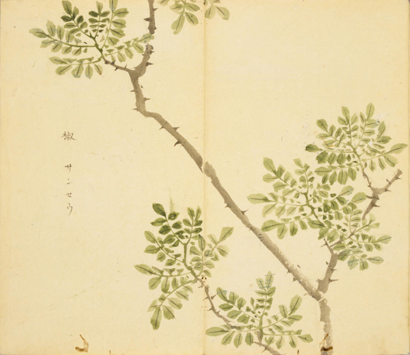
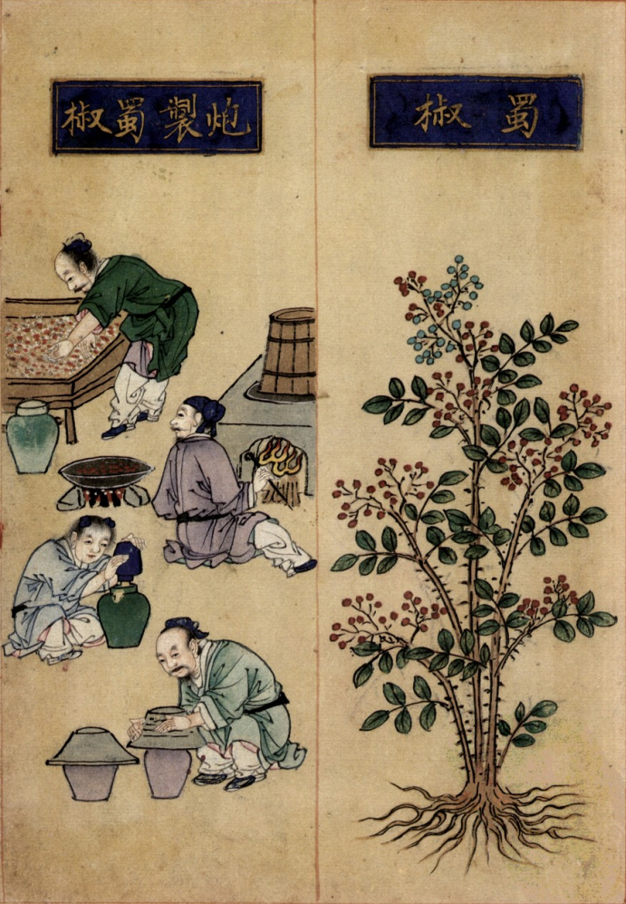
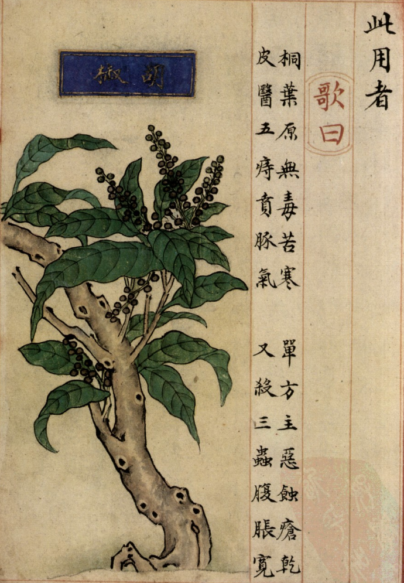
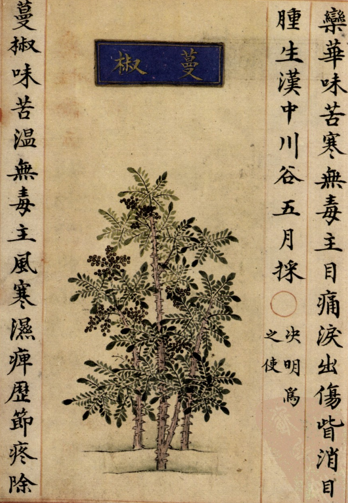
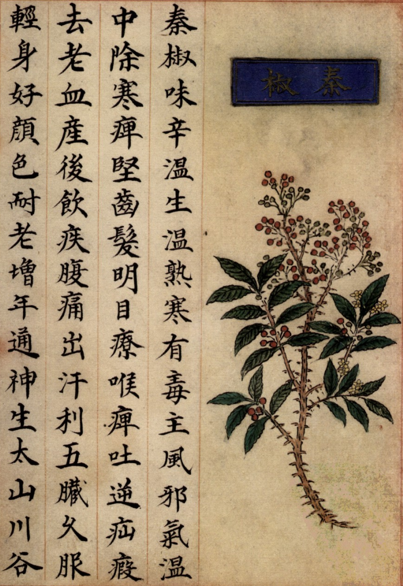

出现篇目
别名 草钟乳（《拾遗》）、起阳草（侯氏《药谱》）。
古代记载
《毛诗正义》
祭韭者，盖以时韭新出，故用之。《王制》云：“庶人春荐韭。”亦以新物，故荐之也。（《毛传》疏《七月》）
__《诗集传》
韭、菜名。獻羔祭韭、而後啓之。（《诗集传》集注《七月》）
《本草纲目》
"《别录》曰∶秦椒生泰山山谷及秦岭上，或琅玡。八月、弘景曰∶今从西来。形似椒而大，色黄黑，味亦颇有椒气。或云即今樛树子。 樛乃猪椒，恐谬。
恭曰∶秦椒树、叶及茎、子都似蜀椒，但味短实细尔。蓝田、秦岭间大有之。
颂曰∶今秦、凤、明、越、金、商州皆有之。初秋生花，秋末结实，九月、十月采之。
《尔雅》云∶檓，大椒。郭璞注云∶椒丛生，实大者为檓也。
《诗．唐风》云∶椒聊之实，繁衍盈升。陆机《疏义》云∶椒树似茱萸，有针刺。茎叶坚而滑泽，味亦辛香。蜀人作茶，吴人作茗，皆以其叶合煮为香。今成皋诸山有竹叶椒，其木亦如蜀椒，小毒热，不中合药也，可入饮食中及蒸鸡、豚用。东海诸岛上亦有椒，枝、叶皆相似。子长而不圆，甚香，其味似橘皮。岛上獐、鹿食其叶，其肉自然作椒、橘香。今南北所生一种椒，其实大于蜀椒，与陶氏及郭、陆之说正相合，当以实大者为秦椒也。
宗奭曰∶此秦地所产者，故言秦椒。大率椒株皆相似，但秦椒叶差大，粒亦大而纹低，不若蜀椒皱纹高为异也。然秦地亦有蜀椒种。
时珍曰∶秦椒，花椒也。始产于秦，今处处可种，最易蕃衍。其叶对生，尖而有刺。四月生细花。五月结实，生青熟红，大于蜀椒，其目亦不及蜀椒目光黑也。
《范子计然》云∶蜀椒出武都，赤色者善；秦椒出陇西天水，粒细者善。苏颂谓其秋初生花，盖不然也。
当代记载
《中国植物志》
花椒 （Zanthoxylum bungeanum），芸香科，花椒属植物。高3-7米的落叶小乔木花期4-5月，果期8-9月或10月。产地北起东北南部，南至五岭北坡，东南至江苏、浙江沿海地带，西南至西藏东南部；台湾、海南及广东不产。见于平原至海拔较高的山地，在青海，见于海拔2500米的坡地，也有栽种。耐旱，喜阳光，各地多栽种。

<细井徇>

<补遗雷公炮制便览>

<补遗雷公炮制便览>

<补遗雷公炮制便览>

<补遗雷公炮制便览>